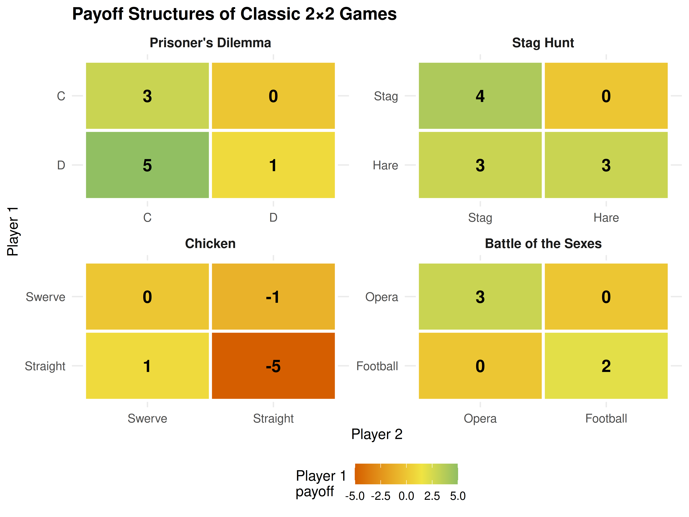

3 Normal-Form Games
The normal (strategic) form is the workhorse representation of simultaneous-move games. This chapter introduces payoff matrices, strict and weak dominance, iterated elimination of strictly dominated strategies (IESDS), and the four classic 2x2 games that recur throughout game theory.
Learning objectives
- Represent a simultaneous-move game as a payoff matrix and interpret its entries.
- Distinguish strict dominance from weak dominance and identify dominated strategies.
- Apply iterated elimination of strictly dominated strategies (IESDS) to simplify games.
- Recognise and classify the four classic 2x2 games: Prisoner’s Dilemma, Stag Hunt, Chicken, and Battle of the Sexes.
- Implement payoff matrices and dominance checks in R and produce publication-quality figures.
3.1 Motivation
Imagine two rival coffee shops opening on the same street, each choosing a price for their latte – high or low – without knowing the other’s decision. Each shop’s profit depends not only on its own price but also on the competitor’s. If both charge high prices, they share a comfortable market; if one undercuts the other, the cheaper shop captures most customers; if both go low, margins evaporate for everyone.
This kind of simultaneous decision under strategic interdependence is exactly what the normal-form (or strategic-form) representation was designed to capture. Introduced by Neumann & Morgenstern (1944), the normal form strips a game down to its essentials: who are the players, what can each player do, and what payoff does each combination of choices produce? These elements are arranged in a payoff matrix, which makes the strategic structure visible at a glance and is the starting point for almost every solution concept in non-cooperative game theory.
3.2 Theory
3.2.1 The normal-form representation
A finite normal-form game is a tuple \(G = (N, (S_i)_{i \in N}, (u_i)_{i \in N})\) where
- \(N = \{1, 2, \ldots, n\}\) is the set of players,
- \(S_i\) is the finite set of strategies (or actions) available to player \(i\), and
- \(u_i : S_1 \times \cdots \times S_n \to \mathbb{R}\) is player \(i\)’s payoff function.
For a two-player game where Player 1 has \(m\) strategies and Player 2 has \(k\) strategies, we arrange payoffs in an \(m \times k\) matrix. Each cell \((i, j)\) contains the pair \((u_1(s_i, s_j),\; u_2(s_i, s_j))\). Player 1 chooses a row, Player 2 chooses a column, and the cell at their intersection determines both payoffs.
3.2.2 Dominance
A strategy \(s_i\) strictly dominates another strategy \(s_i'\) if it yields a strictly higher payoff against every possible strategy profile of the opponents:
\[\begin{equation} u_i(s_i, s_{-i}) > u_i(s_i', s_{-i}) \quad \forall\; s_{-i} \in S_{-i} \tag{3.1} \end{equation}\]
A rational player will never play a strictly dominated strategy – there is always something better, regardless of what others do.
A strategy \(s_i\) weakly dominates \(s_i'\) if it does at least as well against all opponent profiles and strictly better against at least one:
\[\begin{equation} u_i(s_i, s_{-i}) \geq u_i(s_i', s_{-i}) \quad \forall\; s_{-i}, \qquad \text{with strict inequality for some } s_{-i}. \tag{3.2} \end{equation}\]
Weak dominance is a less decisive criterion: eliminating weakly dominated strategies can change the set of Nash equilibria and the order of elimination may matter, so it must be applied with care.
3.2.3 Iterated elimination of strictly dominated strategies (IESDS)
If a strategy is strictly dominated, a rational player will never use it. Knowing this, the other players can remove that strategy from consideration, potentially revealing new dominated strategies in the reduced game. Repeating this process is called IESDS (iterated elimination of strictly dominated strategies).
A key property of IESDS is order independence: the final set of surviving strategies is the same regardless of the order in which dominated strategies are removed (Osborne, 2004, Chapter 2). If IESDS reduces the game to a single strategy profile, the game is dominance solvable – the Prisoner’s Dilemma is the most famous example.
3.2.4 Classic 2x2 games
Four canonical 2x2 games appear throughout game theory and its applications. Each represents a different type of strategic tension:
- Prisoner’s Dilemma. Each player has a dominant strategy (Defect), but mutual cooperation would make both better off. The unique Nash equilibrium is Pareto-inefficient.
- Stag Hunt. Two pure-strategy equilibria exist: one payoff-dominant (both hunt Stag) and one risk-dominant (both hunt Hare). The game models the trade-off between trust and safety.
- Chicken (Hawk-Dove). Two asymmetric pure equilibria (one swerves, the other does not) plus a mixed equilibrium. It captures brinkmanship and anti-coordination.
- Battle of the Sexes. Two pure equilibria where players coordinate on different preferred outcomes, plus a mixed equilibrium. It models coordination with conflicting preferences.
These games reappear in 4 for equilibrium analysis, in 5 for mixed-strategy computation, and in 8 for the study of cooperation over time.
3.3 Implementation in R
We begin by building payoff matrices for the four classic games and writing a helper function to check for strictly dominated strategies.
# Define the four classic 2x2 games as named lists
# Each entry: list(A = Player 1 payoffs, B = Player 2 payoffs)
classic_games <- list(
"Prisoner's Dilemma" = list(
A = matrix(c(3, 0, 5, 1), nrow = 2, byrow = TRUE,
dimnames = list(c("C", "D"), c("C", "D"))),
B = matrix(c(3, 5, 0, 1), nrow = 2, byrow = TRUE,
dimnames = list(c("C", "D"), c("C", "D")))
),
"Stag Hunt" = list(
A = matrix(c(4, 0, 3, 3), nrow = 2, byrow = TRUE,
dimnames = list(c("Stag", "Hare"), c("Stag", "Hare"))),
B = matrix(c(4, 3, 0, 3), nrow = 2, byrow = TRUE,
dimnames = list(c("Stag", "Hare"), c("Stag", "Hare")))
),
"Chicken" = list(
A = matrix(c(0, -1, 1, -5), nrow = 2, byrow = TRUE,
dimnames = list(c("Swerve", "Straight"), c("Swerve", "Straight"))),
B = matrix(c(0, 1, -1, -5), nrow = 2, byrow = TRUE,
dimnames = list(c("Swerve", "Straight"), c("Swerve", "Straight")))
),
"Battle of the Sexes" = list(
A = matrix(c(3, 0, 0, 2), nrow = 2, byrow = TRUE,
dimnames = list(c("Opera", "Football"), c("Opera", "Football"))),
B = matrix(c(2, 0, 0, 3), nrow = 2, byrow = TRUE,
dimnames = list(c("Opera", "Football"), c("Opera", "Football")))
)
)3.3.1 Checking for strict dominance
find_strictly_dominated <- function(payoff_matrix) {
n <- nrow(payoff_matrix)
dominated <- character(0)
strats <- rownames(payoff_matrix)
for (i in seq_len(n)) {
for (j in seq_len(n)) {
if (i != j && all(payoff_matrix[j, ] > payoff_matrix[i, ])) {
dominated <- c(dominated, strats[i])
}
}
}
unique(dominated)
}
# Check each classic game for Player 1's dominated strategies
for (name in names(classic_games)) {
dom <- find_strictly_dominated(classic_games[[name]]$A)
if (length(dom) > 0) {
cat(glue("{name}: Player 1's strictly dominated strategy: {dom}"), "\n")
} else {
cat(glue("{name}: No strictly dominated strategy for Player 1"), "\n")
}
}#> Prisoner's Dilemma: Player 1's strictly dominated strategy: C
#> Stag Hunt: No strictly dominated strategy for Player 1
#> Chicken: No strictly dominated strategy for Player 1
#> Battle of the Sexes: No strictly dominated strategy for Player 13.3.2 Publication figure: classic 2x2 payoff structures
# Convert all four games into a long tibble for faceted plotting
games_long <- purrr::imap_dfr(classic_games, function(game, name) {
mat <- game$A
tidyr::expand_grid(
row = rownames(mat),
col = colnames(mat)
) |>
mutate(
payoff = purrr::map2_dbl(row, col, ~ mat[.x, .y]),
game = name
)
})
# Preserve strategy label ordering
games_long <- games_long |>
mutate(
row = factor(row, levels = rev(c("C", "D", "Stag", "Hare",
"Swerve", "Straight",
"Opera", "Football"))),
col = factor(col, levels = c("C", "D", "Stag", "Hare",
"Swerve", "Straight",
"Opera", "Football")),
game = factor(game, levels = c("Prisoner's Dilemma", "Stag Hunt",
"Chicken", "Battle of the Sexes"))
)
p_classic <- ggplot(games_long, aes(x = col, y = row, fill = payoff)) +
geom_tile(colour = "white", linewidth = 1.2) +
geom_text(aes(label = payoff), size = 5, fontface = "bold") +
facet_wrap(~ game, scales = "free", ncol = 2) +
scale_fill_gradient2(
low = okabe_ito[6], mid = okabe_ito[4], high = okabe_ito[3],
midpoint = 1.5, name = "Player 1\npayoff"
) +
labs(x = "Player 2", y = "Player 1",
title = "Payoff Structures of Classic 2×2 Games") +
theme_publication(base_size = 12) +
theme(
strip.text = element_text(face = "bold", size = 11),
axis.text = element_text(size = 10)
)
p_classic
Figure 3.1: Payoff structures of four classic 2x2 games. Each cell shows Player 1’s payoff. The colour gradient highlights the incentive landscape: brighter cells are more attractive for the row player.
save_pub_fig(p_classic, "classic-2x2-payoffs", width = 8, height = 6)3.4 Worked example
We apply IESDS step by step to a 3x3 game to illustrate how the procedure works.
Consider the following game where Player 1 chooses a row (T, M, B) and Player 2 chooses a column (L, C, R):
# Player 1 payoff matrix
A3 <- matrix(
c(1, 2, 5,
4, 3, 3,
3, 0, 2),
nrow = 3, byrow = TRUE,
dimnames = list(c("T", "M", "B"), c("L", "C", "R"))
)
# Player 2 payoff matrix
B3 <- matrix(
c(2, 1, 0,
1, 4, 1,
3, 2, 3),
nrow = 3, byrow = TRUE,
dimnames = list(c("T", "M", "B"), c("L", "C", "R"))
)
cat("Player 1 payoffs:\n")#> Player 1 payoffs:
A3#> L C R
#> T 1 2 5
#> M 4 3 3
#> B 3 0 2
cat("\nPlayer 2 payoffs:\n")#>
#> Player 2 payoffs:
B3#> L C R
#> T 2 1 0
#> M 1 4 1
#> B 3 2 3Step 1. Check Player 1’s strategies for dominance. Compare row B with row M: \(M\) gives \((4, 3, 3)\) versus \(B\)’s \((3, 0, 2)\). Since \(4 > 3\), \(3 > 0\), and \(3 > 2\), strategy M strictly dominates B. Eliminate B.
cat("Step 1: M strictly dominates B for Player 1.\n")#> Step 1: M strictly dominates B for Player 1.
cat(" M payoffs: ", A3["M", ], "\n")#> M payoffs: 4 3 3
cat(" B payoffs: ", A3["B", ], "\n")#> B payoffs: 3 0 2#> All M > B? TRUE
# Reduce the game
A_r1 <- A3[c("T", "M"), ]
B_r1 <- B3[c("T", "M"), ]
cat("\nReduced game (Player 1 payoffs):\n")#>
#> Reduced game (Player 1 payoffs):
A_r1#> L C R
#> T 1 2 5
#> M 4 3 3Step 2. In the reduced 2x3 game, check Player 2’s strategies. Compare column C with column R for Player 2: C gives \((1, 4)\) versus R’s \((0, 1)\). Column C strictly dominates column R. Eliminate R.
cat("Step 2: C strictly dominates R for Player 2.\n")#> Step 2: C strictly dominates R for Player 2.
cat(" C payoffs (P2): ", B_r1[, "C"], "\n")#> C payoffs (P2): 1 4
cat(" R payoffs (P2): ", B_r1[, "R"], "\n")#> R payoffs (P2): 0 1#> All C > R? TRUE
# Reduce further
A_r2 <- A_r1[, c("L", "C")]
B_r2 <- B_r1[, c("L", "C")]
cat("\nReduced game (Player 1 payoffs):\n")#>
#> Reduced game (Player 1 payoffs):
A_r2#> L C
#> T 1 2
#> M 4 3
cat("\nReduced game (Player 2 payoffs):\n")#>
#> Reduced game (Player 2 payoffs):
B_r2#> L C
#> T 2 1
#> M 1 4Step 3. In the 2x2 game, check Player 1. Row M gives \((4, 3)\) versus row T’s \((1, 2)\). M strictly dominates T. Eliminate T.
cat("Step 3: M strictly dominates T for Player 1.\n")#> Step 3: M strictly dominates T for Player 1.
cat(" M payoffs: ", A_r2["M", ], "\n")#> M payoffs: 4 3
cat(" T payoffs: ", A_r2["T", ], "\n")#> T payoffs: 1 2#> All M > T? TRUE
A_r3 <- A_r2["M", , drop = FALSE]
B_r3 <- B_r2["M", , drop = FALSE]
cat("\nReduced game (Player 2 payoffs):\n")#>
#> Reduced game (Player 2 payoffs):
B_r3#> L C
#> M 1 4Step 4. Player 2 now chooses between L (payoff 1) and C (payoff 4). C strictly dominates L. The unique surviving profile is (M, C) with payoffs (3, 4).
cat("Step 4: C strictly dominates L for Player 2.\n")#> Step 4: C strictly dominates L for Player 2.
cat(" C payoff: ", B_r3[, "C"], "\n")#> C payoff: 4
cat(" L payoff: ", B_r3[, "L"], "\n")#> L payoff: 1
cat("\nIESDS solution: (M, C)\n")#>
#> IESDS solution: (M, C)
cat(glue("Payoffs: ({A3['M', 'C']}, {B3['M', 'C']})"), "\n")#> Payoffs: (3, 4)The game is dominance solvable: IESDS reduces it to a unique strategy profile. This outcome must be a Nash equilibrium – in fact, IESDS can only eliminate strategies that are not part of any Nash equilibrium, so the surviving profile is always a Nash equilibrium (Osborne, 2004).
3.4.1 Displaying the full payoff matrix with gt
payoff_tbl <- tidyr::expand_grid(
Row = rownames(A3),
Col = colnames(A3)
) |>
mutate(
label = map2_chr(Row, Col, \(r, c) glue("({A3[r, c]}, {B3[r, c]})")),
Row = factor(Row, levels = c("T", "M", "B"))
) |>
tidyr::pivot_wider(names_from = Col, values_from = label)
payoff_tbl |>
gt(rowname_col = "Row") |>
tab_stubhead(label = "Player 1 \\ Player 2") |>
tab_style(
style = cell_fill(color = "#C6EFCE"),
locations = cells_body(columns = "C", rows = Row == "M")
) |>
tab_style(
style = cell_text(weight = "bold"),
locations = cells_body(columns = "C", rows = Row == "M")
)| Player 1 \ Player 2 | L | C | R |
|---|---|---|---|
| T | (1, 2) | (2, 1) | (5, 0) |
| M | (4, 1) | (3, 4) | (3, 1) |
| B | (3, 3) | (0, 2) | (2, 3) |
3.5 Extensions
The normal-form representation introduced here is deliberately simple – two players, finite strategies, simultaneous moves. Several important generalisations follow in later chapters:
- Nash equilibrium (4) provides the central solution concept for normal-form games, going beyond dominance to identify self-enforcing strategy profiles.
- Mixed strategies (5) extend the framework by allowing players to randomize over actions, guaranteeing equilibrium existence in every finite game.
- Extensive-form games (6) enrich the model with sequential moves and information sets, but every extensive-form game can be converted to a normal form – at the cost of an exponential blow-up in the matrix size.
- Bayesian games (7) add private information (types) to the normal form, leading to Bayesian Nash equilibrium.
For a rigorous treatment of dominance, IESDS, and the relationship between rationalisability and iterated dominance, see Osborne (2004) (Chapters 2 and 12). The original formulation of normal-form games appears in Neumann & Morgenstern (1944).
Exercises
-
Identifying dominance. Consider the following 3x3 game with Player 1 payoffs \(A\) and Player 2 payoffs \(B\):
\[ A = \begin{pmatrix} 2 & 4 & 1 \\ 3 & 2 & 5 \\ 1 & 3 & 2 \end{pmatrix}, \quad B = \begin{pmatrix} 3 & 1 & 2 \\ 2 & 3 & 1 \\ 4 & 2 & 3 \end{pmatrix} \]
Identify all strictly dominated strategies for each player. Does any player have a weakly dominated strategy?
IESDS practice. Apply IESDS to the game in Exercise 1. Show each elimination step and state the surviving strategy profile(s). Is the game dominance solvable?
-
Classifying 2x2 games. For each of the following payoff pairs, determine which classic 2x2 game type it represents (Prisoner’s Dilemma, Stag Hunt, Chicken, or Battle of the Sexes). Justify your answer by checking the dominance and equilibrium structure.
- \(A = \begin{pmatrix} 5 & 0 \\ 7 & 2 \end{pmatrix}\), \(B = \begin{pmatrix} 5 & 7 \\ 0 & 2 \end{pmatrix}\)
- \(A = \begin{pmatrix} 6 & 1 \\ 4 & 4 \end{pmatrix}\), \(B = \begin{pmatrix} 6 & 4 \\ 1 & 4 \end{pmatrix}\)
From story to matrix. Two firms simultaneously choose whether to invest in a new technology (Invest) or stay with the current one (Stay). If both invest, each earns 5. If neither invests, each earns 3. If one invests and the other stays, the investor earns 1 (high cost, no network effect) and the non-investor earns 4 (free-rides on the standard). Write the payoff matrices, identify any dominated strategies, and classify the game.
Weak dominance and order dependence. Construct a 3x2 game where eliminating weakly dominated strategies in different orders leads to different surviving strategy profiles. Explain why IESDS (strict) does not suffer from this problem.
Solutions appear in D.